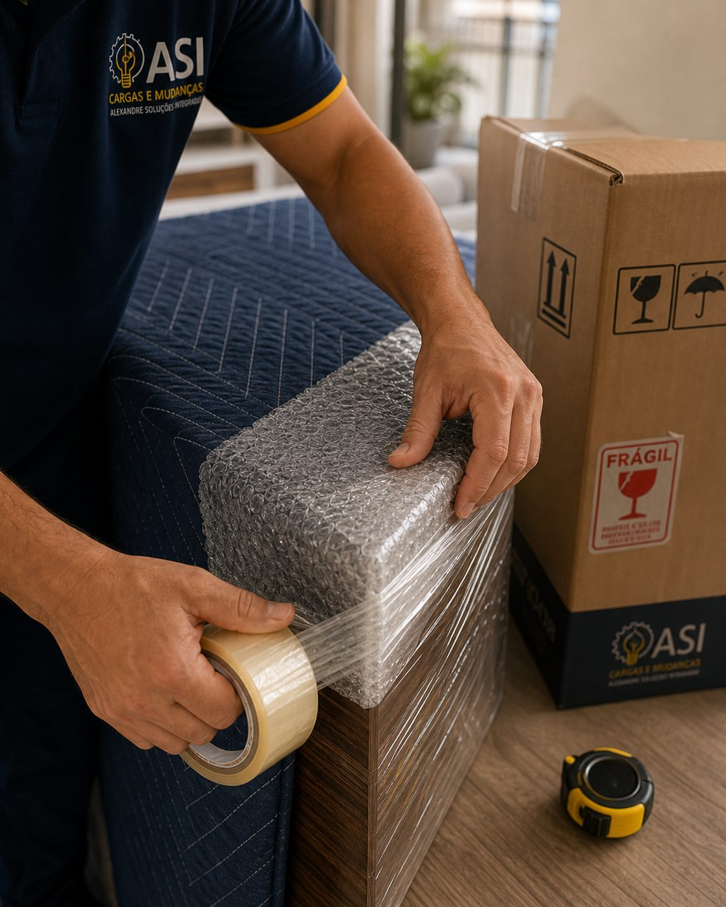
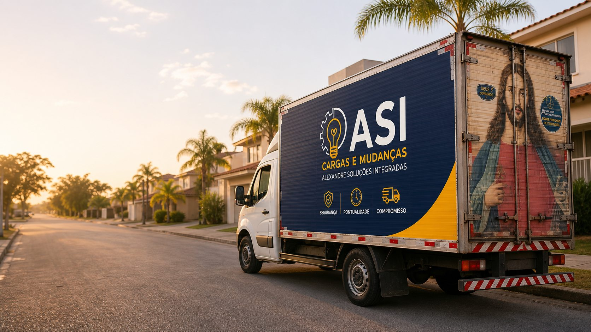

Lara Ramos lalinha2 meses atrás
“Ótimo atendimento, cuidadoso com todos os móveis! Recomendo”
RECENTE · CUIDADO COM MÓVEISInforme origem, destino no Brasil e os itens pesados da casa. O Sr. Alexandre recebe o pedido com contexto para estimar rota, equipe, embalagem e agenda.
Rota nacional + volume primeiro · fotos e detalhes no WhatsApp
“Ótimo atendimento, cuidadoso com todos os móveis! Recomendo”
RECENTE · CUIDADO COM MÓVEIS“Alexandre está de parabéns! Fez todo o combinado na nossa mudança, a todo momento envolvido no processo, informando e explicando tudo. Chegou tudo certinho!”
COMERCIAL · TUDO CERTINHO“A equipe liderada por Alexandre é de um profisionalismo enorme. Cuidaram muito bem de meus móveis, aqueles mais delicados receberam atenção redobrada.”
RESIDENCIAL · TERCEIRA MUDANÇA COM ASI“Excelente trabalho! Cuidado com os móveis e demais pertences, preço justo e agilidade! Recomendo a empresa!”
RESIDENCIAL · PREÇO JUSTO E AGILIDADEVocê sabe quem vai chegar para buscar seus móveis.
Mantas, amarração e itens frágeis entram na avaliação.
Avaliações abertas para conferência antes do pedido.
Sou o Sr. Alexandre. Bacharel em Administração, ex-professor do Instituto Federal do Sertão Pernambucano e empreendedor em Petrolina há mais de 6 anos. Fundei a ASI para trazer a disciplina de gestor e a paciência de educador para a operação de mudanças e fretes da região.
Casa, apartamento, condomínio, escada, elevador e objetos frágeis entram na triagem.Ver detalhes · Cotar
Loja, escritório, estoque, arquivo e equipamento com agenda para não perder o dia.Ver detalhes · Cotar
Petrolina, Juazeiro, Recife, Salvador, Fortaleza e outras rotas sob agenda.Ver detalhes · Cotar
Itens grandes, carga avulsa e transporte com volume, acesso e urgência avaliados.Ver detalhes · Cotar
Proteção, desmontagem, montagem e frágeis entram como extras do pedido.Ver detalhes · Cotar
Quando não for rota direta da ASI, o encaminhamento só acontece com autorização.Ver rotas · Avaliar
O objetivo é reduzir conversa solta: rota, volume, acesso e serviço chegam organizados antes do WhatsApp.
O orçamento considera rota, volume, andar, elevador ou escada, embalagem, montagem, ajudantes e urgência. Antes de confirmar, a ASI valida esses pontos para passar um valor coerente com a operação.

Caixas etiquetadas, mantas de proteção e amarração — cada item entra no lugar certo antes de pegar a estrada.
Perguntar sobre baúProfissionais com uniforme da ASI carregando o que importa — com técnica, sem improviso e sem terceirizar.
Perguntar sobre equipe
Plástico bolha, fita, proteção de cantos e caixa de papelão etiquetada para itens frágeis — antes do caminhão sair.
Perguntar sobre embalagemO site recolhe o que normalmente se perde no WhatsApp: rota, volume, data, acesso, urgência e contato. O Sr. Alexandre recebe uma demanda qualificada antes de responder.
Origem, destino, tipo de serviço, volume aproximado e telefone já chegam organizados.
Data, urgência e acesso ajudam a entender equipe, tempo, embalagem e agenda.
A mensagem já carrega rota, volume, etapa do funil e origem do clique para resposta rápida.
Horário, ajudantes, embalagem, montagem e acesso são conferidos antes da saída.
O combinado vai até o destino: descarregamento, conferência e fechamento sem informação perdida.
Rápido, seguro e com atendimento direto para quem precisa mudar pela região, pelo Nordeste ou cruzar estados sob agenda.

Informe origem, destino, volume, data e acesso. O pedido chega organizado para o Sr. Alexandre responder com mais precisão.
Sim. O atendimento informado no Google vai das 6h às 22h, todos os dias. Você fala diretamente com o Sr. Alexandre.
Atendemos mudanças residenciais, comerciais, fretes e cargas conforme rota, volume e disponibilidade da agenda.
Envie origem, destino, volume aproximado e data desejada pelo WhatsApp. O Sr. Alexandre responde com orçamento contextualizado.
Sim. Recife, Salvador e Fortaleza são rotas frequentes. Outras cidades sob agenda — depende de volume, distância e disponibilidade.
Sim, sob solicitação. Plástico bolha, fita, proteção de cantos e desmontagem/montagem podem entrar no orçamento.
Sim. Caminhão identificado com a marca ASI e equipe própria — não terceirizamos a operação.